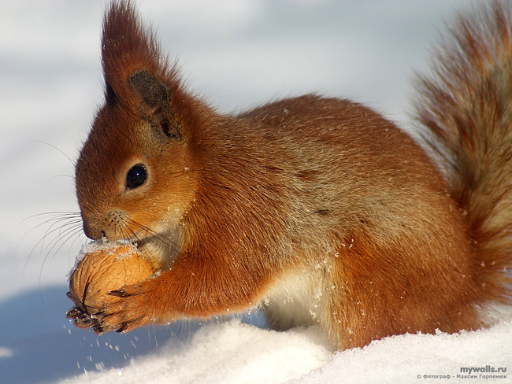
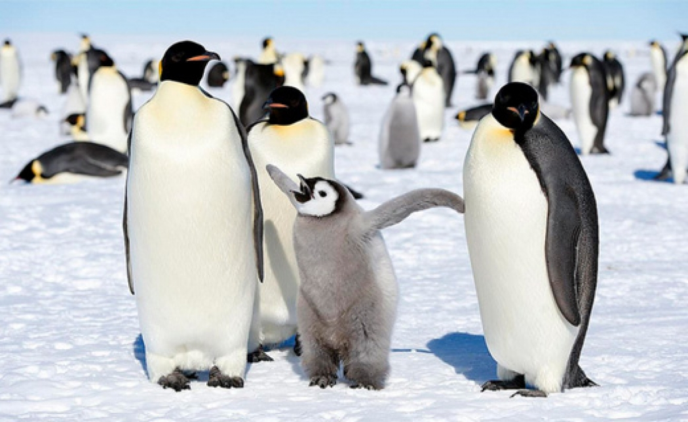

ЦІКАВІ ФАКТИ ПРО ТВАРИН
Цікаві факти про тварин можна перелічувати нескінченно довго. Ми вибрали для вас десятку тих, які, безсумнівно, зроблять ваш день. Тваринне царство налічує мільйони величних, загадкових та чудових видів, які набагато розумніші, ніж ви думаєте.
Ці чудові істоти, які живуть на нашій землі, під темно-синіми океанами та поза нею, безсумнівно, змусять вас посміхнутися, коли ви відкриєте для себе захоплюючі факти про них.
Білки відповідають за посадку тисяч дерев у всьому світі
Вони можуть бути невеликими, але вони відіграють ключову роль у нашому середовищі так, як ви не уявляли. Ці маленькі пухнасті друзі щороку садять тисячі дерев у всьому світі, завдяки простому забуванню, де вони поховали жолуді.

Качки люблять серфінг
Качки люблять їздити на хвилі в синьому морі. Їх спостерігали, як вони їхали хвилями океану на берег і знову пливли назад. І так багато раз. Чи може це бути їх улюбленим хобі?
Дикі шимпанзе із задоволенням вживають алкоголь
Як і люди, шимпанзе люблять отримувати опяніння від алкоголю. Протягом багатьох років дослідники виявили зв’язок між людьми, які вживають алкоголь, і шимпанзе, що шукають природний ферментований алкоголь.
Котяче мявкання – це форма спілкування лише з людьми, а не з іншими котами
Коти, наші пухнасті друзі, які люблять проводити свій час, відпочиваючи поруч з нами … або поверх нас, але ви помітили, що вони завжди мяють навколо нас? Ну, це форма спілкування, але лише між котами та людьми. Ви не побачите наших котячих друзів, які використовують ту саму форму контакту з іншою кішкою, крім кошенят та їх матерів. Кішки притуляють голову до людей, щоб вони могли знати, що вони відчувають себе в безпеці.
Маленькі слоненя самозаспокоюються, смокчучи хобот
Як і людські діти, молоді слони також самозаспокоюються. Діти використовують форму смоктання великого пальця або пустушку, тоді як немовлята слони смокчуть власні хоботи для комфорту.
Пінгвіни пропонують один одному камінчики
Коли пінгвіни вибирають пару, вони залишаються разом на все життя. Так само, як люди пропонують один одному, обмінюючись кільцем, пінгвіни використовують той же метод, але з камінчиком. Коли вони бачать іншого пінгвіна, який їм подобається, вони приносять до них маленький камінь, який представляє свою прихильність один до одного.
